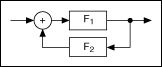

The following figure shows a diagram of a generic system with positive feedback.

For the system shown in the previous figure, the following equation yields the transfer function of the system.
where F1(x) and F2(x) define two rational polynomials as shown by the following equations.